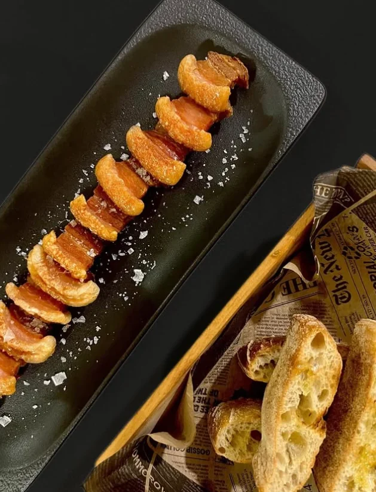
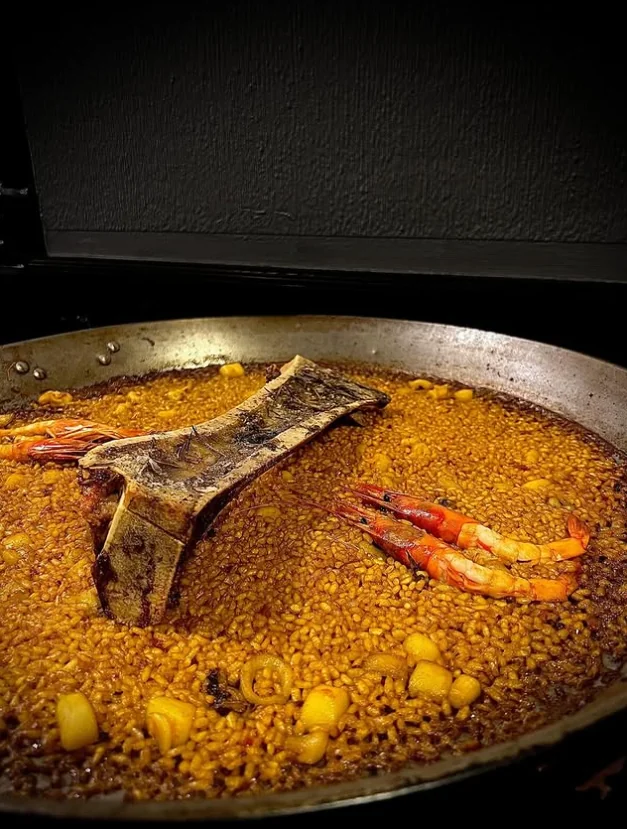

Producto de la tierra y de temporada. Tradición servida con cuidado.

Se elaboran al momento, en su punto meloso. Recomendamos encargarlos al reservar.
Elaborados al momento y por encargo. Consúltanos las variedades del día — arroz meloso de marisco, a banda, de bogavante, de pollo y conejo, y nuestra fideuá marinera.
De Almansa a Ribera del Duero. Una selección que mira primero a nuestra denominación y se abre a las grandes referencias.
La carta cambia con la temporada y el mercado. Disponemos también de menú del día. Para arroces por encargo y grupos, reserva con antelación.